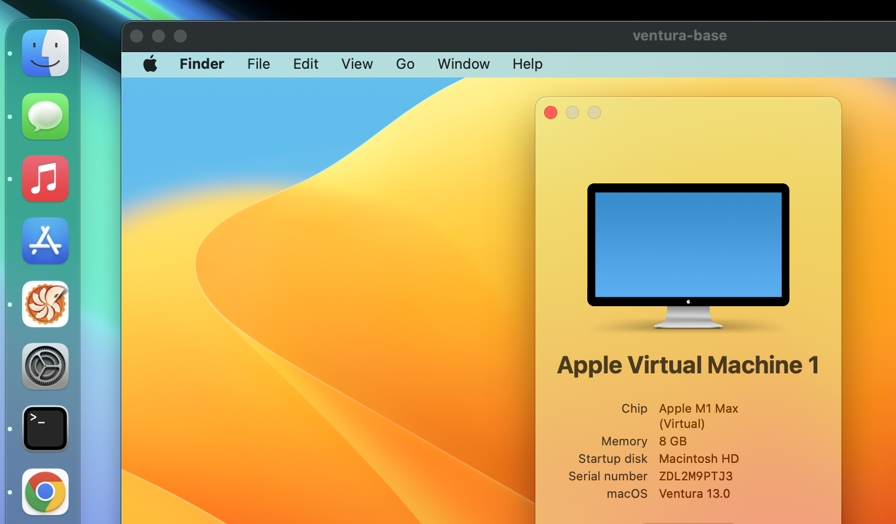

Quick Start
Try running a Tart VM on your Apple Silicon device running macOS 13.0 (Ventura) or later (will download a 25 GB image):
brew install cirruslabs/cli/tart
tart clone ghcr.io/cirruslabs/macos-tahoe-base:latest tahoe-base
tart run tahoe-base
Manual installation from a release archive
It's also possible to manually install tart binary from the latest released archive:
curl -LO https://github.com/cirruslabs/tart/releases/latest/download/tart.tar.gz
tar -xzvf tart.tar.gz
./tart.app/Contents/MacOS/tart clone ghcr.io/cirruslabs/macos-tahoe-base:latest tahoe-base
./tart.app/Contents/MacOS/tart run tahoe-base
Please note that ./tart.app/Contents/MacOS/tart binary is required to be used in order to trick macOS
to pick tart.app/Contents/embedded.provisionprofile for elevated privileges that Tart needs.

VM images¶
The following macOS images are currently available:
- macOS 26 (Tahoe)
ghcr.io/cirruslabs/macos-tahoe-vanilla:latestghcr.io/cirruslabs/macos-tahoe-base:latestghcr.io/cirruslabs/macos-tahoe-xcode:latest
- macOS 15 (Sequoia)
ghcr.io/cirruslabs/macos-sequoia-vanilla:latestghcr.io/cirruslabs/macos-sequoia-base:latestghcr.io/cirruslabs/macos-sequoia-xcode:latest
- macOS 14 (Sonoma)
ghcr.io/cirruslabs/macos-sonoma-vanilla:latestghcr.io/cirruslabs/macos-sonoma-base:latestghcr.io/cirruslabs/macos-sonoma-xcode:latest
- macOS 13 (Ventura)
ghcr.io/cirruslabs/macos-ventura-vanilla:latestghcr.io/cirruslabs/macos-ventura-base:latestghcr.io/cirruslabs/macos-ventura-xcode:latest
- macOS 12 (Monterey)
ghcr.io/cirruslabs/macos-monterey-vanilla:latestghcr.io/cirruslabs/macos-monterey-base:latestghcr.io/cirruslabs/macos-monterey-xcode:latest
There's also a full list of images in which you can discovery specific tags (e.g. ghcr.io/cirruslabs/macos-monterey-xcode:15) and macOS-specific Packer templates that were used to generate these images.
For, Linux the options are as follows:
- Ubuntu
ghcr.io/cirruslabs/ubuntu:latest
- Debian
ghcr.io/cirruslabs/debian:latest
- Fedora
ghcr.io/cirruslabs/fedora:latest
Note that these Linux images have a minimal disk size of 20 GB, and you might want to resize them right after cloning:
These Linux images can be ran natively on Vetu, our virtualization solution for Linux, assuming that Vetu itself is running on an arm64 machine.
Similarly to macOS, there's also a full list of images in which you can discovery specific tags (e.g. ghcr.io/cirruslabs/ubuntu:22.04) and Linux-specific Packer templates that were used to generate these images.
All images above use the following credentials:
- Username:
admin - Password:
admin
These credentials work both for logging in via GUI, console (Linux) and SSH.
SSH access¶
If the guest VM is running and configured to accept incoming SSH connections you can conveniently connect to it like so:
Running scripts inside Tart virtual machines
We recommend using Cirrus CLI to run scripts and/or retrieve artifacts
from within Tart virtual machines. Alternatively, you can use plain ssh connection and tart ip command:
Creating VM images¶
Tart supports macOS and Linux virtual machines. All commands like run and pull work the same way regardless of the underlying OS a particular VM image has.
The only difference is how such VM images are created. Please check sections below for macOS and Linux instructions.
Creating a macOS VM image from scratch¶
Tart can create VMs from *.ipsw files. You can download a specific *.ipsw file here or you can
use latest instead of a path to *.ipsw to download the latest available version:
After the initial booting of the VM, you'll need to manually go through the macOS installation process. As a convention we recommend creating an admin user with an admin password. After the regular installation please do some additional modifications in the VM:
- Enable Auto-Login. Users & Groups -> Login Options -> Automatic login -> admin.
- Allow SSH. Sharing -> Remote Login
- Disable Lock Screen. Preferences -> Lock Screen -> disable "Require Password" after 5.
- Disable Screen Saver.
- Run
sudo visudoin Terminal, find%admin ALL=(ALL) ALLaddadmin ALL=(ALL) NOPASSWD: ALLto allow sudo without a password.
Creating a Linux VM image from scratch¶
Linux VMs are supported on hosts running macOS 13.0 (Ventura) or newer.
# Create a bare VM
tart create --linux ubuntu
# Install Ubuntu
tart run --disk focal-desktop-arm64.iso ubuntu
# Run VM
tart run ubuntu
After the initial setup please make sure your VM can be SSH-ed into by running the following commands inside your VM:
Configuring a VM¶
By default, a Tart VM uses 2 CPUs and 4 GB of memory with a 1024x768 display. This can be changed after VM creation with tart set command.
Please refer to tart set --help for additional details.
Mounting directories¶
To mount a directory, run the VM with the --dir argument:
Here, the project specifies a mount name, whereas the ~/src/project is a path to the host's directory to expose to the VM.
It is also possible to mount directories in read-only mode by adding a third parameter, ro:
To mount multiple directories, repeat the --dir argument for each directory:
Note that the first parameter in each --dir argument must be unique, otherwise only the last --dir argument using that name will be used.
Note: to use the directory mounting feature, the host needs to run macOS 13.0 (Ventura) or newer.
Accessing mounted directories in macOS guests¶
All shared directories are automatically mounted to /Volumes/My Shared Files directory.
The directory we've mounted above will be accessible from the /Volumes/My Shared Files/project path inside a guest VM.
Note: to use the directory mounting feature, the guest VM needs to run macOS 13.0 (Ventura) or newer.
Changing mount location
It is possible to remount the directories after a virtual machine is started by running the following commands:
sudo umount "/Volumes/My Shared Files"
mkdir ~/workspace
mount_virtiofs com.apple.virtio-fs.automount ~/workspace
After running the above commands the direcory will be available at ~/workspace/project
Accessing mounted directories in Linux guests¶
To be able to access the shared directories from the Linux guest, you need to manually mount the virtual filesystem first:
The directory we've mounted above will be accessible from the /mnt/shared/project path inside a guest VM.
Auto-mount at boot time
To automatically mount this directory at boot time, add the following line to the /etc/fstab file:
Working with a Remote OCI Container Registry¶
Tart supports interacting with Open Container Initiative (OCI) registries, but only runs images created and pushed by Tart. This means images created for container engines, like Docker, can't be pulled. Instead, create a custom image as documented above.
For example, let's say you want to push/pull images to an OCI registry hosted at https://acme.io/.
Registry Authorization¶
First, you need to login to acme.io with the tart login command:
If you login to your registry with OAuth, you may need to create an access token to use as the password. Credentials are securely stored in Keychain.
In addition, Tart supports Docker credential helpers
if defined in ~/.docker/config.json.
Finally, TART_REGISTRY_USERNAME and TART_REGISTRY_PASSWORD environment variables allow to override authorization
for all registries, which might be useful for integrating with your CI's secret management.
You can also set the TART_REGISTRY_HOSTNAME environment variable to apply these overrides only to a specific host.
Pushing a Local Image¶
Once credentials are saved for acme.io, run the following command to push a local images remotely with two tags:
Pulling a Remote Image¶
You can either pull an image:
or create a VM from a remote image:
If the specified image is not already present, this invocation calls the tart pull implicitly before cloning.